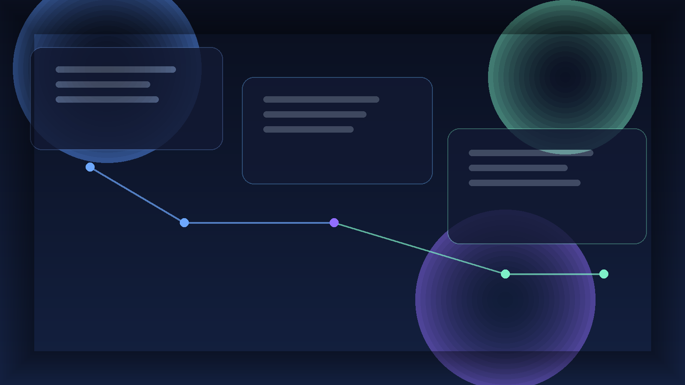

Editorial
recent-github-repos 長文評論版
完整論述版，適合正式 blog / 電子報。
最近追蹤的三個 GitHub repo 觀察：Onyx、Harness、Humanizer-zh-TW，對照 AI 平台、工程治理與文字修整三種不同節奏。

Onyx、Harness、Humanizer-zh-TW
完整論述版，適合正式 blog / 電子報。
縮短版核心觀點，適合快速發佈。
Telegram / Threads / Blog intro 三種渠道輸出。